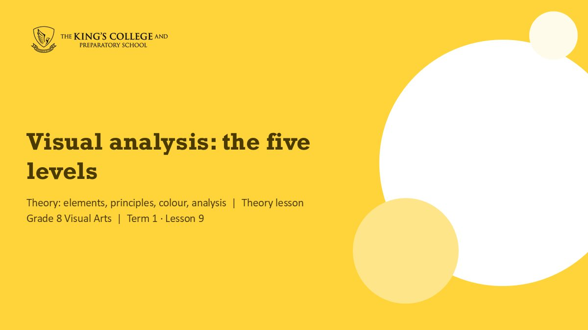

Term 2 · Lesson 2 · Theory and practical lesson
Principles of Design 1: Pattern, Rhythm, Emphasis, Unity
Start Here
Today I Will
- Today I will explain what a principle of design is
- Today I will recognise pattern, rhythm, emphasis and unity in artworks
- Today I will draw one small design for each of the four principles
A chef has ingredients and a recipe. In art, the elements are the ingredients. What do you think the recipe is?
Words to Know
| Word | Meaning |
|---|---|
| Principles of design | The ways artists arrange the elements of art in a picture. |
| Pattern | A line, shape, colour or motif repeated in a regular, planned way. |
| Rhythm | A feeling of visual beat or flow created by repeating elements with regular or changing gaps. |
| Emphasis | Making one part of an artwork stand out so the viewer looks there first. |
| Focal point | The place in an artwork the eye goes to first and keeps returning to. |
| Unity | The sense that all the parts of an artwork belong together and make a complete whole. |
Slides

Videos
Notes
What a principle is (how the elements are arranged); pattern, rhythm, emphasis and unity with artwork examples. Watch: principles videos (at home).
Four Principles
- Pattern: The same motif repeated in a planned way, like tiles, fabric or the arches of a building.
- Rhythm: Repetition with a beat: regular, flowing or growing, like music for the eyes.
- Emphasis: One part made different (size, value, shape or position) so it becomes the focal point.
- Unity: Everything belongs together, because shapes, marks or tones are shared across the work.
How to Make Each One in a Small Design
| Principle | Try this in graphite |
|---|---|
| Pattern | Repeat one simple motif (a leaf, a triangle) in neat rows across the box. |
| Rhythm | Repeat a wave or a circle that grows bigger or closer together across the box. |
| Emphasis | Draw many light, small circles and one large, dark circle. |
| Unity | Use only one kind of shape and one kind of mark, so every part looks like family. |
Elements are the ingredients; principles are the recipe.
Practical
You need: Visual journal, HB, 2B, 4B and 6B pencils, eraser
Four Principle Boxes
- Rule four equal boxes of about 8 cm on a journal page.
- Box 1: a pattern made by repeating one motif in rows.
- Box 2: rhythm, using repeated shapes or lines that flow or change in size or spacing.
- Box 3: emphasis, with one clear focal point that is different from everything else.
- Box 4: unity, using only one shape family and one kind of mark.
- Under each box, write the principle and one sentence on how you created it.
Test Yourself
- What is the difference between the elements of art and the principles of design?
- What is the difference between pattern and rhythm?
- How did you create a focal point in your emphasis box?
Show answers
1. Elements are the building blocks (line, shape, value and so on); principles are how they are arranged. 2. Pattern is a planned repeat of a motif; rhythm is the visual beat or flow that repetition creates. 3. Own answer, e.g. one larger, darker or different shape among many similar ones.
Finished Early?
Turn a plain pattern into one with a visual beat.
- Draw two strips of six small boxes in your visual journal.
- In the first strip, repeat the same circle in every box (pattern).
- In the second, let the circles grow bigger or move closer together across the strip (rhythm).
- Write one sentence: how does the second strip move your eye differently?